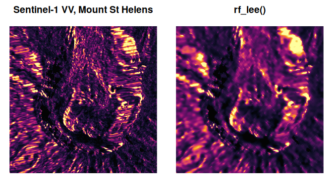

Minimal, blazing-fast moving-window filters for R matrices and 3-D arrays, with methods for terra SpatRaster and gdalraster GDALRaster objects, powered by Rust and rayon.
-
Speckle filters for SAR intensity data:
rf_lee(),rf_enhanced_lee(),rf_lee_sigma(),rf_lee_sigma_improved()(Lee et al. 2009, SNAP-style),rf_frost(),rf_kuan(),rf_gamma_map(). -
Smoothing:
rf_mean()(boxcar),rf_gaussian()(separable),rf_median(), plus the edge-preservingrf_bilateral()andrf_guided()(He et al. 2013, window-size-independent cost). -
Focal statistics:
rf_focal()with min, max, range, sd, sum, mode. -
Convolution and edges:
rf_convolve()with arbitrary kernels,rf_sobel(),rf_laplacian(). -
Parallel by default: all cores on load; tune with
rf_set_threads(). Results are bitwise identical whatever the thread count. -
NA-aware by default: missing cells are excluded from every window statistic (
na_policy = "omit"), with a documented fast path (na_policy = "propagate") that compiles NA handling out of the inner loop entirely: anyNAin a window then makes that cellNA. Choose it when your data has no missing values. -
Four edge policies:
"shrink"(default),"reflect","nearest","constant".
Mean, sum, sd and the single-pass speckle filters (Lee, enhanced Lee, Kuan, Gamma-MAP) run on a separable sliding-sum engine whose per-cell cost is independent of the window size, so a 21 x 21 window costs the same as 3 x 3.
Installation
# install.packages("pak")
pak::pak("belian-earth/rustyfilters")Building from source needs a Rust toolchain (rustc >= 1.80): https://rustup.rs.
Quick start
library(rustyfilters)
# A speckled two-level scene, as single-look SAR intensity might look
set.seed(1)
truth <- matrix(rep(c(1, 4), each = 3200), 80, 80)
speckled <- truth * rexp(6400)
despeckled <- rf_lee(speckled, window = 7L, looks = 1)
op <- par(mfrow = c(1, 2), mar = c(1, 1, 2, 1))
image(speckled, axes = FALSE, main = "speckled")
image(despeckled, axes = FALSE, main = "rf_lee()")
par(op)Focal statistics and smoothing share the same engine:
m <- matrix(as.numeric(1:25), 5)
rf_focal(m, window = 3L, stat = "sd")
#> [,1] [,2] [,3] [,4] [,5]
#> [1,] 2.943920 4.505552 4.505552 4.505552 2.943920
#> [2,] 2.880972 4.415880 4.415880 4.415880 2.880972
#> [3,] 2.880972 4.415880 4.415880 4.415880 2.880972
#> [4,] 2.880972 4.415880 4.415880 4.415880 2.880972
#> [5,] 2.943920 4.505552 4.505552 4.505552 2.943920
rf_gaussian(m, sigma = 1)
#> [,1] [,2] [,3] [,4] [,5]
#> [1,] 4.116513 7.163616 11.51942 15.87522 18.92232
#> [2,] 4.725934 7.773037 12.12884 16.48464 19.53175
#> [3,] 5.597094 8.644198 13.00000 17.35580 20.40291
#> [4,] 6.468255 9.515358 13.87116 18.22696 21.27407
#> [5,] 7.077675 10.124779 14.48058 18.83638 21.88349terra and gdalraster
SpatRaster methods are available whenever terra is installed (the raster is materialised in memory, filtered layer by layer, and rebuilt with its geometry):
r <- terra::rast(system.file("ex/elev.tif", package = "terra"))
rf_median(r, window = 5L)
#> class : SpatRaster
#> size : 90, 95, 1 (nrow, ncol, nlyr)
#> resolution : 0.008333333, 0.008333333 (x, y)
#> extent : 5.741667, 6.533333, 49.44167, 50.19167 (xmin, xmax, ymin, ymax)
#> coord. ref. : lon/lat WGS 84 (EPSG:4326)
#> source(s) : memory
#> name : elevation
#> min value : 142
#> max value : 537.5Open gdalraster GDALRaster datasets work the same way: the result is a new GDALRaster object on a Float64 dataset with the source’s geometry, in-memory (/vsimem) by default or on disk via filename:
f <- system.file("extdata/storml_elev.tif", package = "gdalraster")
ds <- new(gdalraster::GDALRaster, f)
smoothed <- rf_median(ds, window = 5L)
smoothed
#> C++ object of class <GDALRaster>
#> • Driver: GeoTIFF (GTiff)
#> • DSN: "/vsimem/rustyfilters_51bf42fa4b728.tif"
#> • Dimensions: 143, 107, 1
#> • CRS: NAD83 / UTM zone 12N (EPSG:26912)
#> • Pixel resolution: 30.000000, 30.000000
#> • Bbox: 323476.071971, 5101871.983031, 327766.071971, 5105081.983031
smoothed$close()
ds$close()Threads
Everything runs on all cores by default. Control it globally:
rf_get_threads()
#> [1] 20
old <- rf_set_threads(2L)
rf_set_threads(old)Set options(rustyfilters.threads = n) or RUSTYFILTERS_NUM_THREADS before loading to change the startup default.